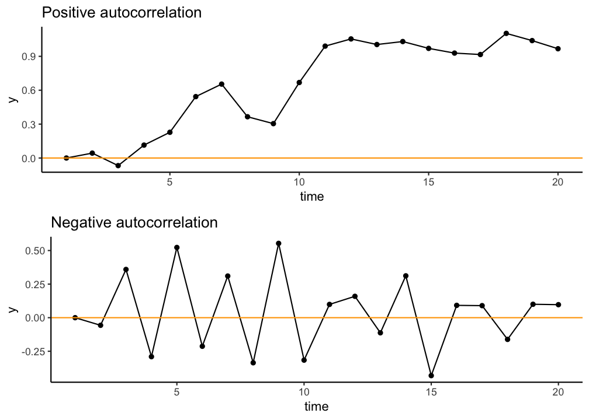
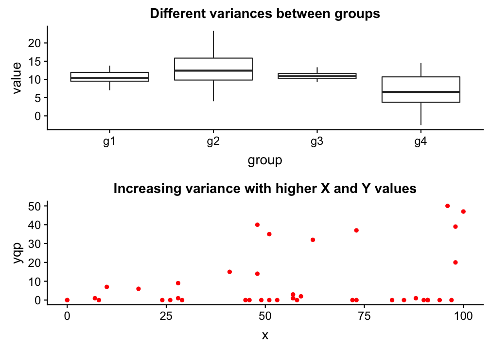
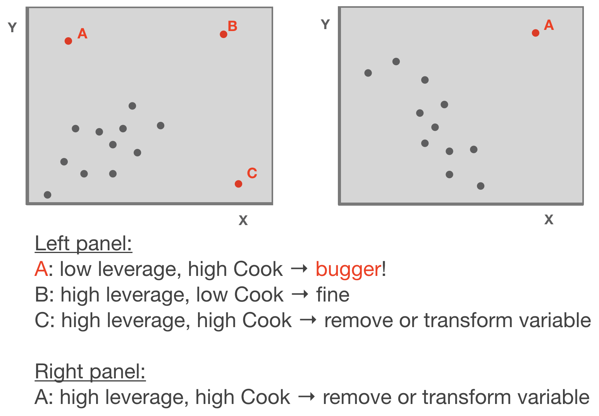
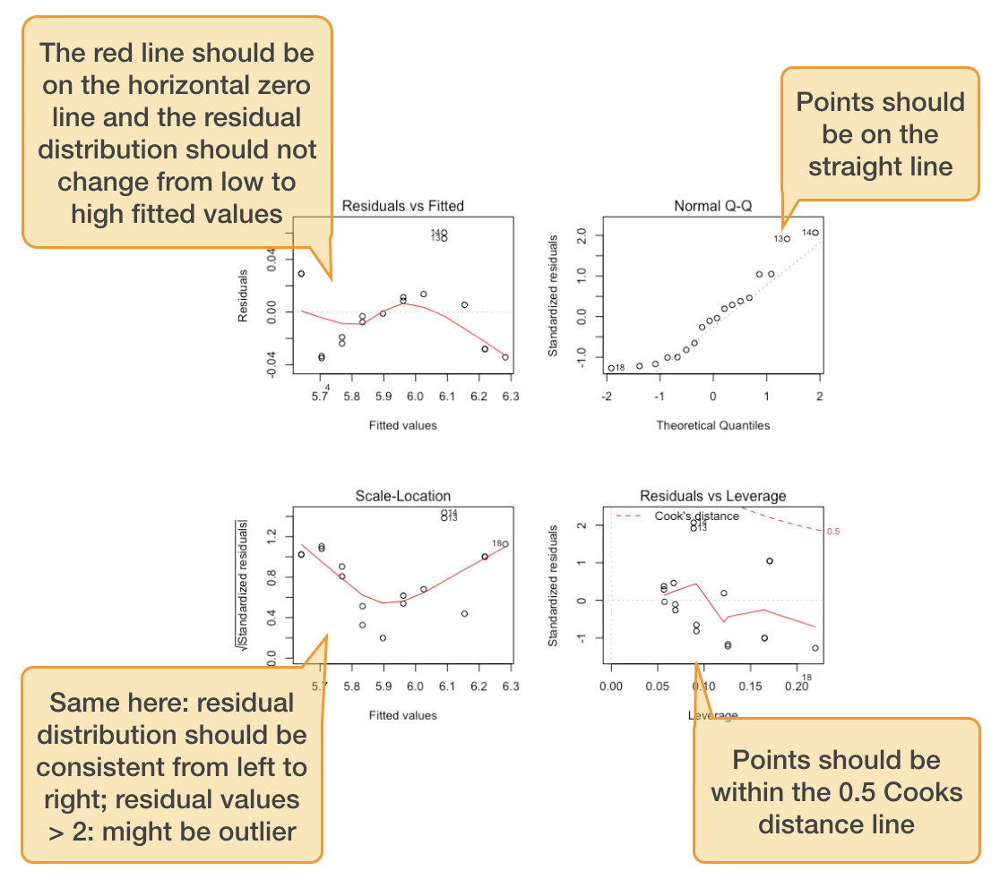
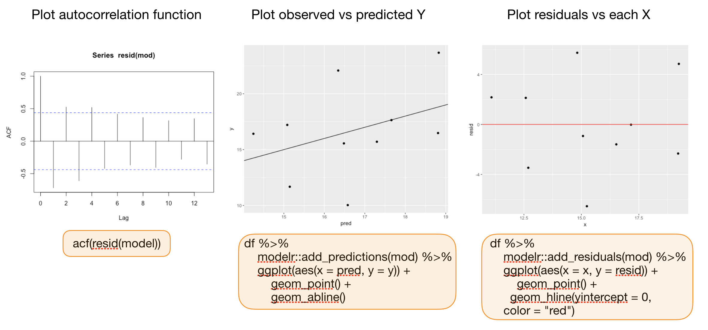
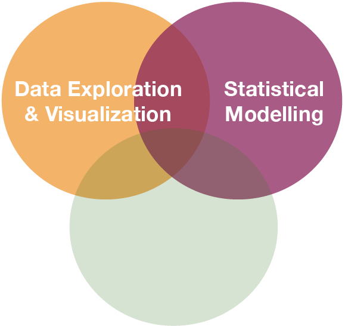
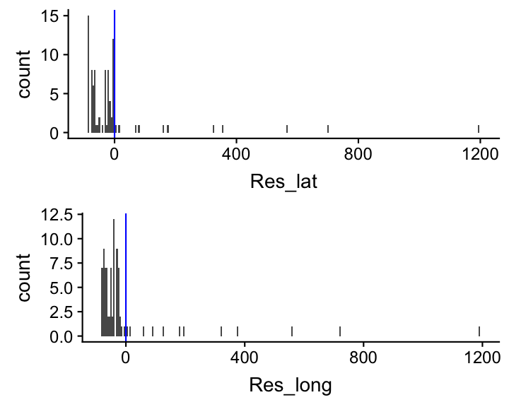
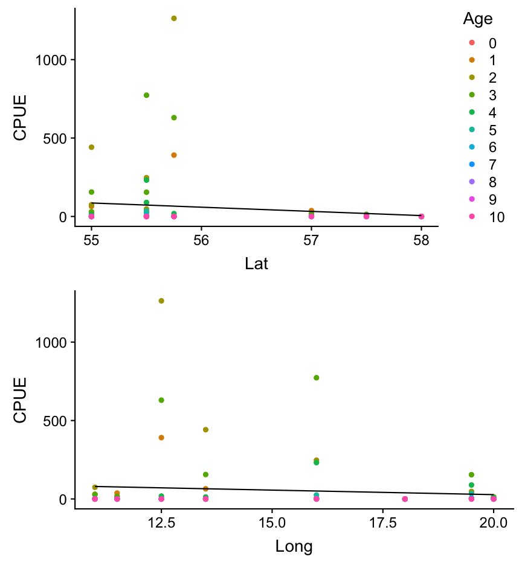

Data Analysis with R
13 - Intro2Statistical Modelling - Part 2
Saskia A. Otto
Postdoctoral Researcher
Model assumption

Assumptions of linear regression models
- Independence (most important!)
- Homogeneity / homogenous variances (2nd most important)
- Normality / normal error distribution
- Linearity
Assumptions of linear regression models
- Independence (most important!)
- Homogeneity / homogenous variances (2nd most important)
- Normality / normal error distribution
- Linearity
Independence assumption
- Dependence inflates p-values
- Dependence you can "smell"
- Dependence due to model misfit
- Temporal or spational dependence
- df incorrect (number of independent components)

Assumptions of linear regression models
- Independence (most important!)
- Homogeneity / homogenous variances (2nd most important)
- Normality / normal error distribution
- Linearity
Homogeneity
→ The variance in Y is constant (i.e. the variance does not change as Y gets bigger/smaller).
→ Only one variance has to be estimated and not one for every X value.
→ Also the multiple residuals for every X are expected to be homogeneous.

p
Check: outlier / influential observations
Leverage / Cook‘s distance ⇒ step of model validation
- Leverage: tool that identifies observations that have rather extreme values for the explanatory variables and may potentially bias the regression results
- Cook's distance statistic: measure for influential points → identifies single observations that are influential on all regression parameters: it calculates a test statistic D that measures the change in all regression parameters when omitting an observation.
- D > 0.5 considered as too influential
- D > 1: very critical
- It is easier to justify omitting influential points if they have both, large Cook and large leverage values.
Leverage / Cook‘s distance ⇒ step of model validation

Adapted from: Zuur et al. (2007)
p
Standard graphical output for model validation
Lets use the salinity ~ depth example from lecture 12:
(taken from the ICES hydro dataset, station 0076, 2015-02-01)
par(mfrow = c(2,2))
plot(mod)
par() sets plotting parameters.
The mfrow argument creates a multi-paneled plot; first argument in the vector specifies the number of rows and the second the number of columns of plots.
Standard graphical output for model validation
Lets use the salinity ~ depth example:
par(mfrow = c(2,2))
plot(mod)

Standard graphical output for model validation
Lets use the salinity ~ depth example:
par(mfrow = c(2,2))
plot(mod)
$\epsilon$ seems slightly correlated with Y
$\epsilon$ ~ N
No outlier or too influential data point

Ordinary vs. standardized residuals
- Ordinary residuals: observed – fitted value
- Standardized residuals = the residual divided by its standard deviation:
\[e_{stand.} = \frac{e_{i}}{\sqrt{MS_{Residual}*(1-h_{i})}}\]
- where \(e_{i}\) = observed - fitted value; \(h_{i}\) = leverage for observation i; \(MS_{Residual}\) represents the residual variance → more on this later
- Standardised residuals are assumed to be normally distributed with expectation 0 and variance 1; N(0,1).
- Consequently, large residual values (>2) indicate a poor fit of the regression model.
Compute residuals in R
You can compute both types of residuals using
residuals(model)(works too:resid()) from the stats package → returns a vector with the ordinary residualsrstandard(model)from the stats package → returns a vector with the standardized residualsadd_residuals(data, model, var = "resid")from the modelr package (in tidyverse) → adds the variable 'resid' containing the ordinary residuals to your data frame; useful when piping operations!
Additional graphics for model validation

Your turn...
Quiz: Identify violated assumptions or outliers
Load the 4 datasets into your workspace: assumptions1.txt, assumptions2.txt, assumptions3.txt, assumptions4.txt
df <- read_delim("data/assumptions1.txt")
str(df)
Regress each y variables against x in the same dataset using the lm function and inspect the 4 diagnostic plots per model.
par(mfrow = c(2,2))
plot(your_lin_model)
Each of the 4 models will have outliers or assumptions that are not met. Find these and try to find a solution! How do the summary outputs change?
Coming back to the EDA cycle ...


source flowchart: R for Data Science by Wickam & Grolemund, 2017 (licensed under CC-BY-NC-ND 3.0 US)
Your turn...
Try it out yourself:
Can you find a latitudinal or longitudinal gradient in cod CPUE during the first quarter in 2015?
In this exercise, you can apply yourself what has been outlined in the EDA cycle: Follow up on the exercise from lecture 10, in which we tried to identify visually whether the CPUE differs between areas. Now you will explore visually but also statistically, whether the observed differences follow a specific pattern: Does the CPUE increase or decrease with latitude or longitude?
Apply the following steps. If you need some guidance, look at the next slides.
- Load the dataset "data/cod_2015_q1.R", which contains the data frame
cod15 - Add coordinates of the area to the dataset → for more info press 'p'
- Visualize the relationship between CPUE and Lat/Long
- Apply linear models and inspect the model diagnostic plots
- Create histograms of each model residuals
- Highlight the age group in your scatterplot from step 3 (e.g. colour points by age) → which age group deviates greatest?
p
1. Data loading
Load the following dataset, which is a subset of the full CPUE dataset ("CPUE per age per area_2017-11-20 06_48_16.csv") we used already in lecture 10:
load("data/cod_2015_q1.R")
ls()
## [1] "cod15"
p
2. Adding coordinates
To get the latitude and longitude for each area
- search the internet for a map that shows the ICES subdivisions (SD) for the Baltic Sea and estimate the central coordinates for each SD (= area),
- create a tibble that contains the
Areavariable as well as the respectiveLatandLongvalues and than - merge this tibble into the
cod15tibble using ajoinfunction from the dplyr package
2. Adding coordinates (cont)
Here are some rough approximations of the central coordinates of each area:
sd_coord <- tibble(
Area = factor(c(21,22,23,24,25,26,27,28,29,30,31,32)),
Lat = c(57,55,55.75,55,55.5,55.5,58,57.5,59.5,62,64.75,60),
Long = c(11.5,11,12.5,13.5,16,19.5,18,20,21,19.5,22.5,26)
)
2. Adding coordinates (cont)
The merging can be done using the left_join() function from dpylr:
cod15 <- left_join(cod15, sd_coord,
by = "Area") %>% print(n = 5)
## # A tibble: 88 x 5
## Area Age CPUE Lat Long
## <fct> <fct> <dbl> <dbl> <dbl>
## 1 21 0 0 57 11.5
## 2 22 0 0 55 11
## 3 23 0 0 55.8 12.5
## 4 24 0 0 55 13.5
## 5 25 0 0 55.5 16
## # ... with 83 more rows
left_join()
This function returns all rows from the left table (1st table listed in the function), and all columns from both tables. Alternative functions: right_join(), inner_join(), full_join()
3. Visualize the relationship between CPUE and Lat/Long
p_lat <- cod15 %>%
ggplot(aes(x = Lat, y = CPUE)) +
geom_point() +
geom_smooth(method="lm", se=F)
p_long <- cod15 %>%
ggplot(aes(x = Long, y = CPUE)) +
geom_point() +
geom_smooth(method="lm", se=F)
grid.arrange(p_lat, p_long, nrow = 2)

4. Apply the linear statistical models and inspect the model diagnostic plots
m_lat <- lm(formula = CPUE ~ Lat, data = cod15)
m_long <- lm(formula = CPUE ~ Long, data = cod15)
par(mfrow = c(2,4))
plot(m_lat)
plot(m_long)
4. Apply the linear statistical models and inspect the model diagnostic plots
m_lat <- lm(formula = CPUE ~ Lat, data = cod15)
m_long <- lm(formula = CPUE ~ Long, data = cod15)
par(mfrow = c(2,4))
plot(m_lat)
plot(m_long)
What do you think about the residual distributions? Any outlier?

4. Apply the linear statistical models and inspect the model diagnostic plots
m_lat <- lm(formula = CPUE ~ Lat, data = cod15)
m_long <- lm(formula = CPUE ~ Long, data = cod15)
par(mfrow = c(2,4))
plot(m_lat)
plot(m_long)
What do you think about the residual distributions? Any outlier?
No outlier, but strong violation of normality and homogeneity assumptions

5. Create histograms of the model residuals
Compute the residuals and generate histograms for both models
cod15 <- cod15 %>%
add_residuals(model = m_lat, var = "Res_lat") %>%
add_residuals(model = m_long, var = "Res_long")
p_lat <- cod15 %>%
ggplot(aes(x = Res_lat)) +
geom_histogram(binwidth = 5) +
geom_vline(xintercept = 0,
colour = "blue", size = 0.5)
p_long <- cod15 %>%
ggplot(aes(x = Res_lat)) +
geom_histogram(binwidth = 5) +
geom_vline(xintercept = 0,
colour = "blue", size = 0.5)
grid.arrange(p_lat, p_long, nrow = 2)

Both residual distributions are highly right-skewed, meaning there are many values that slightly deviate from 0 and a few that deviate greatly!
One should stop here, in fact, as the model assumptions are violated, and do something such as transforming the data or excluding age groups. This will be discussed in the next lecture.
6. Which age group deviates greatest from the prediction?
Lets visualize again the relationship between CPUE and Lat/Long but this time colour the data points by the age groups and plot the predictions manually.
p_lat <- cod15 %>%
add_predictions(m_lat, "Pred") %>%
ggplot(aes(x = Lat)) +
geom_point(aes(y = CPUE, colour = Age)) +
geom_line(aes(y = Pred))
p_long <- cod15 %>%
add_predictions(m_long, "Pred") %>%
ggplot(aes(x = Long)) +
geom_point(aes(y = CPUE, colour = Age)) +
geom_line(aes(y = Pred)) +
guides(colour = "none")
grid.arrange(p_lat, p_long, nrow = 2)

Overview of functions you learned today
par() for setting global graphical parameters
linear regression model: plot(model), residuals(), resid(), rstandard(model), modelr::add_residuals(data)
joining tables: dplyr::left_join()
How do you feel now.....?
Totally confused?

Try out the exercises and read up on linear regressions in
- chapter 23 on model basics in 'R for Data Science'
- chapter 10 (linear regressions) in "The R book" (Crawley, 2013, 2nd edition) (an online pdf version is freely available here)
- or any other textbook on linear regressions
Totally bored?

Think of solutions for the CPUE ~ Lat/Long model and compare the model results.
Totally content?
Then go grab a coffee, lean back and enjoy the rest of the day...!

Thank You
For more information contact me: saskia.otto@uni-hamburg.de
http://www.researchgate.net/profile/Saskia_Otto
http://www.github.com/saskiaotto

This work is licensed under a
Creative Commons Attribution-ShareAlike 4.0 International License except for the
borrowed and mentioned with proper source: statements.
Image on title and end slide: Section of an infrared satallite image showing the Larsen C
ice shelf on the Antarctic
Peninsula - USGS/NASA Landsat:
A Crack of Light in the Polar Dark, Landsat 8 - TIRS, June 17, 2017
(under CC0 license)